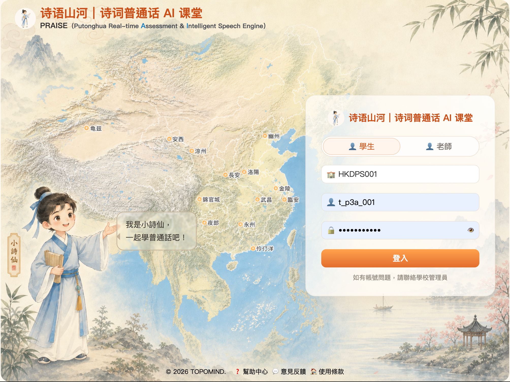

Spatial AI for Learning, Culture and Decision Intelligence
We make spatial intelligence accessible.
TopoMind turns geography, culture and spatial data into AI products that help people learn, analyze and decide with real-world context.
Spatial AI Vision
From cultural learning to geospatial decision support.
Learn
Geographic culture for AI learning
Analyze
Conversational spatial analysis
Positioning
TopoMind is a Spatial AI company for learning, culture and decision intelligence.
We believe the next generation of AI should understand real-world context: where things happen, how places relate, why location matters, and how knowledge changes across geography. TopoMind builds products that connect places, knowledge, data and decisions.
Our first product applies this idea to Putonghua education by embedding Chinese geography and classical poetry into AI-assisted learning. Our second product applies it to geospatial intelligence by simplifying GIS, remote sensing and spatial analysis into conversational agent workflows for governments, NGOs and business analysis teams.
Platform Capabilities
One Spatial AI foundation, two applied product directions
The same foundation powers cultural-geographic learning and professional geospatial intelligence: spatial knowledge, multimodal interaction, data fusion and agentic workflows.
Spatial Knowledge Modelling
Model places, routes, landmarks, cultural references and geospatial entities as structured context that AI can search, reason over and recommend from.
Data Fusion
Aggregate open data, maps, remote sensing and private datasets into usable analytical context for education, public-interest work and business decisions.
Multimodal Interaction
Connect voice, maps, imagery, text and companion interfaces so users can learn, explore and analyze through natural interaction.
Agentic Workflow Automation
Turn GIS processing, map overlays, monitoring, risk summaries and report generation into conversational AI-agent workflows.
Product Lines
Two products, one Spatial AI thesis

Education + AI
Shi Yu Shan He | Poetry Putonghua AI Classroom
An AI Putonghua education product that brings Chinese geography and classical poetry into language learning. Students learn pronunciation through poems, places and cultural context, while teachers get real-time assessment, class management and learning records powered by PRAISE.
- Classical poetry mapped to geographic and cultural context
- Real-time Putonghua pronunciation assessment
- Teacher dashboard, class records and AI companion learning
GeoINT AI Agent
GeoINT + AI
Geospatial Intelligence and Analysis AI Agent
An AI agent product for geospatial intelligence. It aggregates open data, connects private datasets and turns complex GIS, remote-sensing and spatial-analysis workflows into a conversational mode of work for government departments, NGOs and business analysis teams.
- Open-data aggregation and private-data fusion
- Conversational GIS, remote-sensing and map-analysis workflows
- Risk monitoring, spatial briefs and decision-ready reports
Use Cases
Where spatial intelligence becomes practical
EducationPutonghua learning, classical poetry, Chinese geographic culture and AI classroom tools.
Public SectorUrban observation, regional analysis, risk monitoring, emergency planning and spatial decision support.
NGO and Social ImpactEnvironmental monitoring, humanitarian response, field operations and location-based reporting.
Business IntelligenceMarket analysis, site selection, supply-chain exposure and geospatial due diligence.
Team
Core team
TopoMind is led by practitioners with deep experience in GIS systems, spatial big data, data science and Hong Kong market development.
Hong Kong Market Advisor
Issac, CK Tai
Master's degree in Mathematics and Data Science, with 10 years of experience as a data analyst. He advises TopoMind on Hong Kong market development, customer insight and data-driven go-to-market strategy.
Partner with TopoMind
Bring spatial intelligence into your next learning or decision workflow.
We welcome education institutions, cultural content partners, government teams, NGOs, geospatial data teams and AI transformation partners.